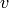
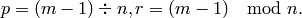

networkx.algorithms.bipartite.centrality.betweenness_centrality¶
- networkx.algorithms.bipartite.centrality.betweenness_centrality(G, nodes)¶
Compute betweenness centrality for nodes in a bipartite network.
Betweenness centrality of a node  is the sum of the fraction of all-pairs shortest paths that pass through .
Values of betweenness are normalized by the maximum possible value which for bipartite graphs is limited by the relative size of the two node sets [R75].
Let
 be the number of nodes in the node set
be the number of nodes in the node set  and
be the number of nodes in the node set
and
be the number of nodes in the node set  , then
nodes in are normalized by dividing by
, then
nodes in are normalized by dividing by![\frac{1}{2} [m^2 (s + 1)^2 + m (s + 1)(2t - s - 1) - t (2s - t + 3)] ,](../../_images/math/9690f7ee6f9572fe78cbdd57270c2aacf51dedd3.png)
where

and nodes in
are normalized by dividing by![\frac{1}{2} [n^2 (p + 1)^2 + n (p + 1)(2r - p - 1) - r (2p - r + 3)] ,](../../_images/math/db1b96adda1614ea92c1b007150c9be8f93e0b10.png)
where,

Parameters : G : graph
A bipartite graph
nodes : list or container
Container with all nodes in one bipartite node set.
Returns : betweenness : dictionary
Dictionary keyed by node with bipartite betweenness centrality as the value.
See also
degree_centrality, closeness_centrality, networkx.algorithms.bipartite.basic.sets, networkx.algorithms.bipartite.basic.is_bipartite
Notes
The nodes input parameter must contain all nodes in one bipartite node set, but the dictionary returned contains all nodes from both node sets.
References
[R75] (1, 2) Borgatti, S.P. and Halgin, D. In press. “Analyzing Affiliation Networks”. In Carrington, P. and Scott, J. (eds) The Sage Handbook of Social Network Analysis. Sage Publications. http://www.steveborgatti.com/papers/bhaffiliations.pdf